Original post found here. Backup of the image in case of deletion here. Please steal this and fill it out yourself!
Translation courtesy of le goog. As usual, there's a lot of nonsensical translations. I generally search twitter as each unclear prompt is posted for clarification. Sometimes, even the Koreans are guessing what the prompt means.
January 인놀 play: Hors sent me gifts and Hina went insane :3!!!!
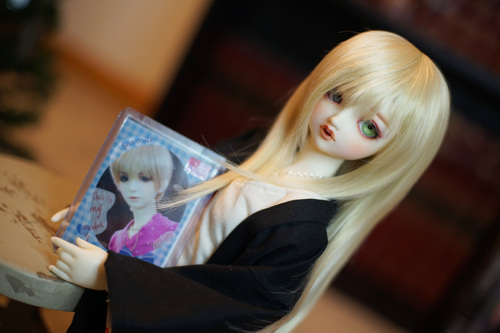We also celebrated her most precious birthday with more photos~
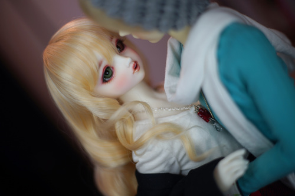February 인놀 play: Nothing particularly interesting happened on the 20th.
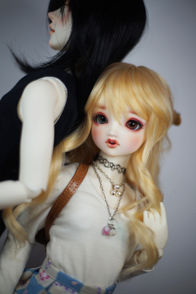March 인놀 play: I discovered the idea of Midnite Fotoshoot. Cheby attended Sakuracon with me~
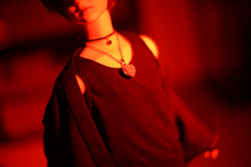April 인놀 play: Rio turned 15! Hina got her turn at the Midnite Fotoshoot.
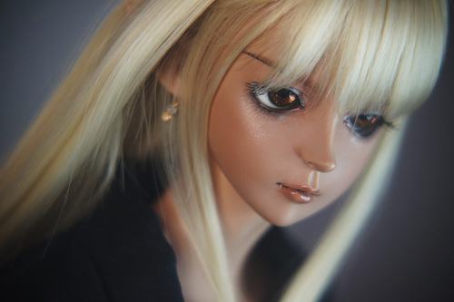 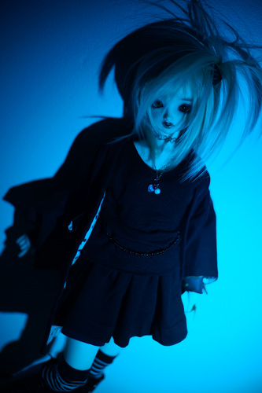May 인놀 play: Scary Hina went outside. Do not mess with this little goth Kpop fanatic!!!
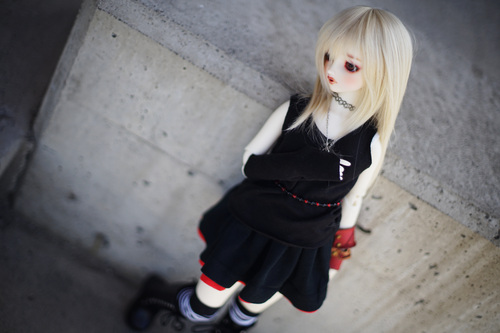June 인놀 play: I shipped Grassy to Kazakhstan. BUH BYE
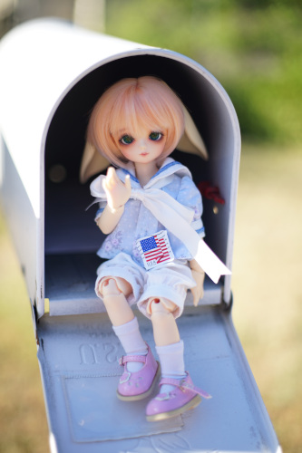July 인놀 play: Rio has officially been with me for half my life. I took a break from packing to celebrate with a portrait.

August 인놀 play: Hina got a new purse and new boyfriend
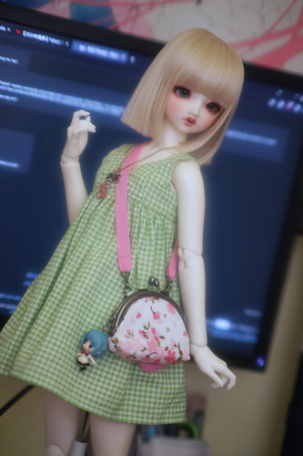 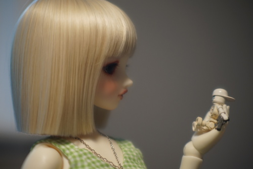September 인놀 play: Liam and Pafa celebrated their birthdays together~
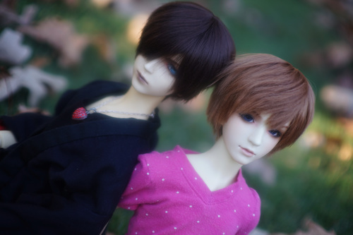October 인놀 play: Didn't take many dollfoto this month. Made a Cool Jacket for Liam.
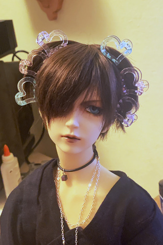November 인놀 play: Another month of nofoto? Almost. I prioritized packing dolls over clothes and taveled to the other side of the state with Liam, Volta, Hina, and Cheby and a very limited wardrobe. Verona was left for his own safety and lack of space. You're not going to believe this, but he is extremely precious to me!
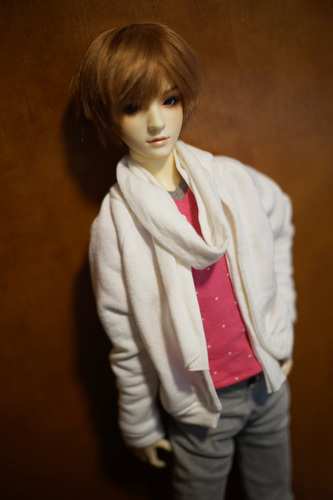New face of 2024:
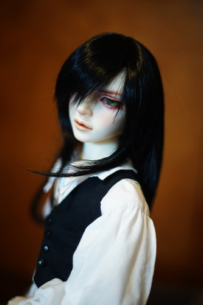Doll and day or night: I choose night because this is the first year I've taken photos with the lights in the room out.
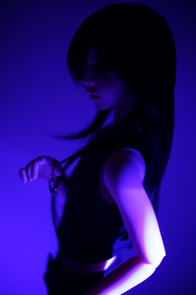Seasons and dolls:
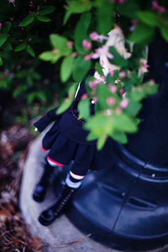Spring
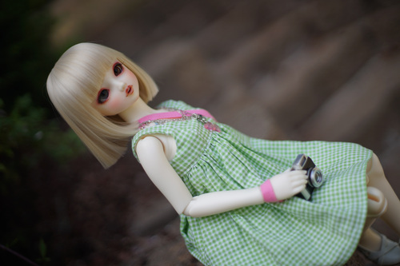Summer
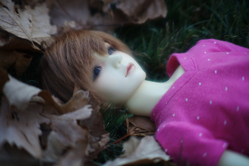Fall
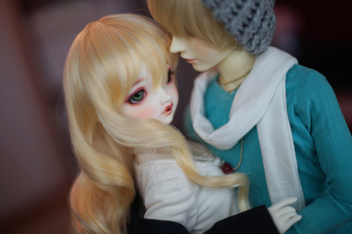Winter
Dolls and people: You thought you were getting a photo of me today? Tricked!!
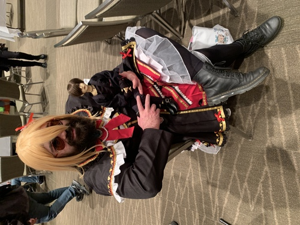Dolls and animals: Featuring an animal I call "cat". Others call her "Macy".
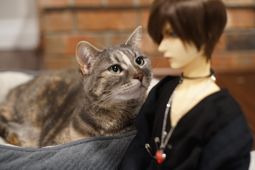Hanbok doll play: None. Didn't happen. Won't happen.
Doll play outside of the house: Cheby is not a Kpop fan! Taken at the Tacoma Mall.
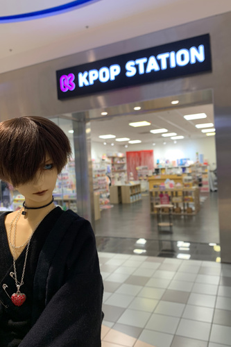Cheby has been in public the most. I'm not deathly afraid of breaking or losing him since he's the cheapest and easiest to replace. If I lose a finger, I'm going to groan hard when I have to buy him another $100 body, but I'd still do it. If I mess up his faceup, I'll just redo it. Thanks for being an easy doll!
Group doll play: In addition to attending the Sakuracon meetup, I also got to have doll fun with my bff!
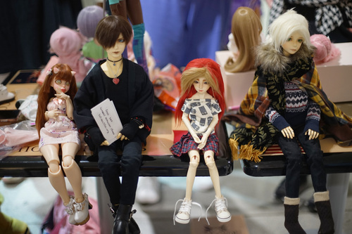No one took a business card.
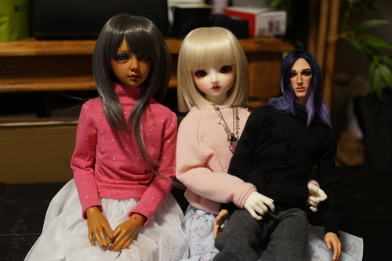Outdoor doll play: Hina, Cheby, and Liam all made it outside this year for photos.
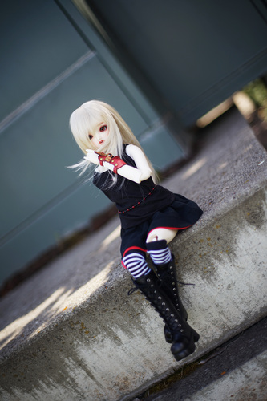Solo/couples photo shoot: A solo shoot of Hina with her accessory, Liam. Oops, had to use the same shoot 3 times already in this...
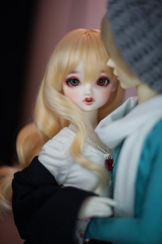Face or full body photo: I thought this prompt was too easy, but it turns out that I usually don't do only face or full body. Surprise?
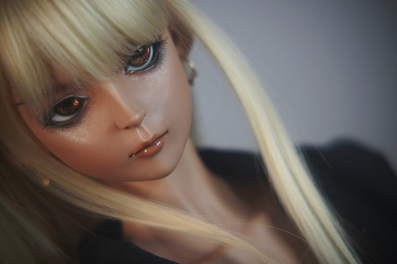Black and white photography: I feel like it would be cheating to just apply a greyscale filter over an image I already have, but here goes nothing!!
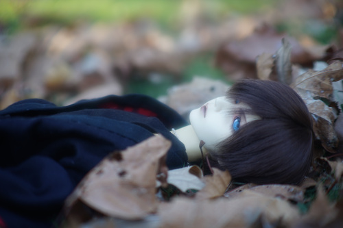Doll from behind or body parts: I can't believe I wasted the one I wanted to use for this on 12/20!!!!!
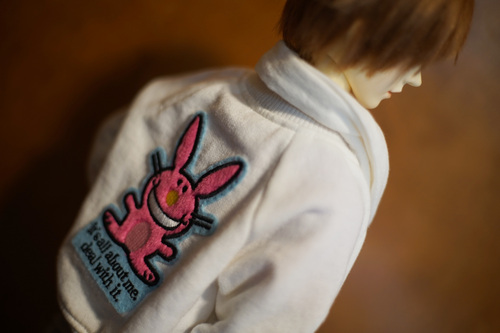Dolls made by me: Looks like I never even posted the outfit I made for Praline this year. It makes her look fat due to being closed with 2 snaps, which is bulky on a doll this size.
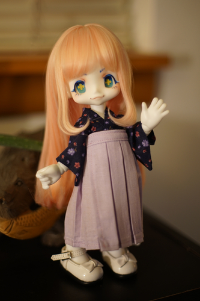Doll videos: I tried making one for this prompt but it sucked. Maybe next year.
Best of the year: [REDACTED]. Only subscribers to the email newsletter will know.
Damn of the year: HINA. PLEASE BEHAVE. HOW DID YOU DO THIS.
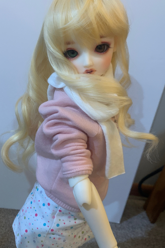December 인놀 play: I didn't make anything in December, but I took advantage of the Christmas tree as a photoshoot location many times. The best pictures turned out to be Volta capturing the Elf on the Shelf imho.
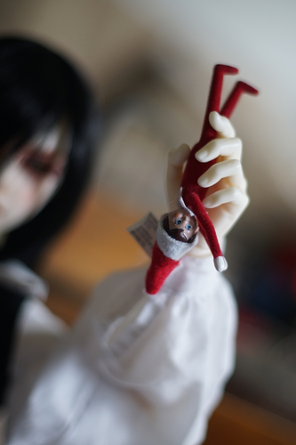Proud of playing with dolls: I am ridiciously proud of Volta's high waisted pants but not proud enough to post a picture of his doll butt in them. I do have a photo of him laying in a pile of mockups though...
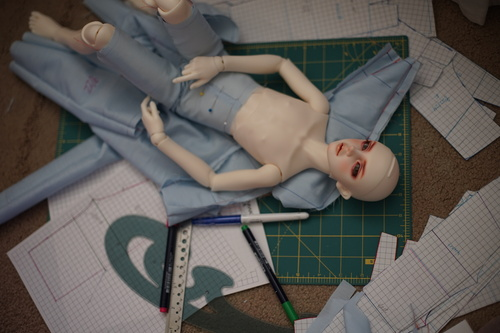Next year's wishes: I hope that Volta will be in a presentable state before the end of 2025! I want to bite the bullet and make however many mockups it takes to make him at least one full outfit. And sock garters!!! I would love to make Draven or Fries, but I would really like to have a home to put them in before they exist. If they don't happen, that's fine too! I will always be looking for Fries though.
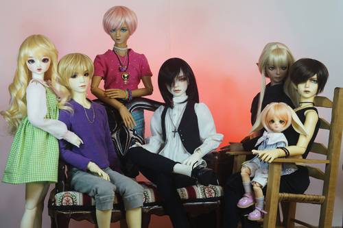